+
B.9 | JPDEM Sub-Reach Delineations
Overview (Tutorial B.9 - JPDEM Sub-Reach Delineations)
Large watersheds can include many sub-watersheds, each draining to their respective sub-reach outlets. VELMA users have the option of simulating the overall watershed using a single outlet, or breaking up the watershed into multiple delineated sub-watersheds (each with a sub-reach outlet) and simulating them in parallel. The latter option can be much faster computationally, especially for very large watersheds.
This tutorial describes how to use JPDEM to establish a set of sub-reach outlets, in preparation for using VELMA to simulate, in parallel, daily streamflow for a designated set of sub-watersheds / sub- reach outlets.
Note: Additional tutorials (C.1 - C.3) explain how to run VELMA in parallel mode. When running in parallel mode, VELMA is programmed to collect simulated daily streamflow information for each designated sub-reach outlet. VELMA uses that information to compute, for each sub-reach outlet, the sum of flow contributions from (1) all upstream grid cells draining to the sub-reach outlet, and (2) only those cells falling between the sub-reach outlet and the next upstream sub-reach outlet (thereby excluding flow from all other upstream cells).
Thus, aside from potential gains in computational efficiency, sub-reach delineations for running VELMA in parallel mode can help watershed managers tease apart streamflow responses to local and more distant upstream changes in land cover and land use.
Warning:
The functionality describe here is an initial draft that will be refined when the development schedule permits.
The JPDEM application provides a collection of functions that, when applied in concert, allow you to determine a set of outlets for sub-reaches of an overall watershed's area.
Once identified, a set of outlets can be used to configure a JVelma simulation so that runoff information is generated for each of the sub-reach outlets.
JPDEM Must Have Flat-Processed DEM and Flow Data Available for Delineation
Use JPDEM to flat-process the map containing your overall watershed before you use JPDEM to determine the sub-reach outlet locations. Flat-process the raw DEM .asc file, save it to a new .asc file, and then close JPDEM, restart it, and load the new, flat-processed .asc file. If you already have a flat- processed .asc file available, you can simply start JPDEM and load it.
Once you have flat-processed DEM map loaded in JPDEM, use the "Determine DEM Flow" tool to generate flow and direction information. (The delineation tools need this information to figure how which cells flow to which reach outlets.)
Click the "Tools" -> "Determine DEM Flow Data (Alternate)" menu item, as shown in the following
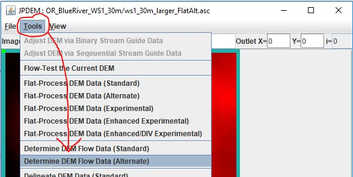Delineate the Overall Watershed First
After JPDEM determines the flat-processed DEM's flow data, the map display should so a grayscale image like this:
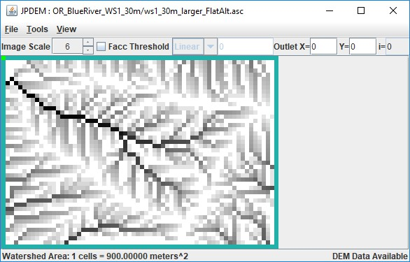Set the Outlet X= and Y= fields to the x,y coordinates of the primary outlet for your watershed (i.e. the cell location of the pour point for the entire watershed), then click the "Tools" -> "Delineate DEM Data (Experimental)" menu item.
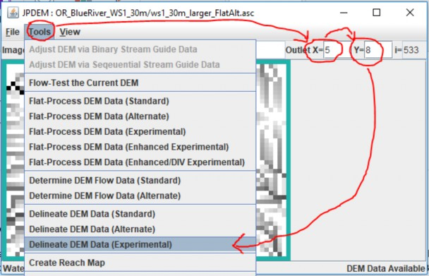Display the Overall Delineation, and the High-Flow Paths
Once it is delineated, the watershed is clearly marked in JPDEM's map display:
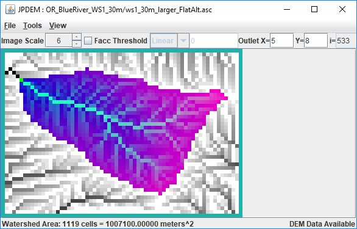Usually, you'll want to choose sub-reach outlet locations at forks in the highest-flow paths of the watershed. You can see those paths by clicking the "Facc Threshold" checkbox, then typing a cell count in the numeric field to its right.
In the example below, the Facc Threshold is set to 75, which means that any cell colored red has 75 or more cells flowing into it.
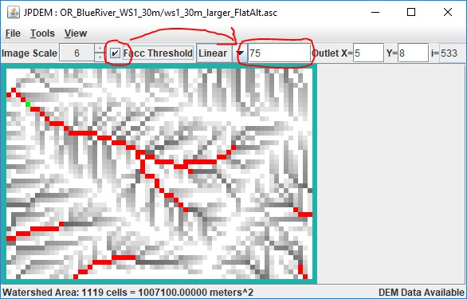Note that when the Facc Threshold indicator is checked, the watershed area is not shown. You can switch back and forth between the two display modes by repeatedly clicking the Facc Threshold checkbox.
Determining Sub-Reach Outlets Manually
Using the Delineation and Facc Threshold displays, you can see which cells are in the overall watershed, and which of those in-watershed cells form the highest flow paths. The process of determining the cell locations of sub-reaches is as follows:
First, with the Outlet X and Y values set to the overall watershed's outlet location, click the "Tools" ->
"Add Current Outlet to Outlets Set":
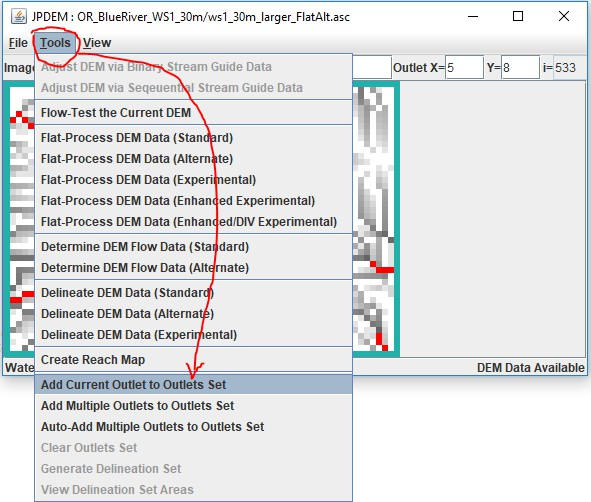The "current outlet" is the outlet whose X and Y coordinates are specified in upper right numeric fields of JPDEM's status bar.
Once the overall watershed's outlet is recorded, adding other, sub-reach outlets is simply a matter of changing the current outlet X and Y values, and click the "Add Current Outlet …" menu item again.
You can directly enter the X and Y value of each new sub-reach outlet into the Outlet X=, Y= fields, but if you don't know the exact coordinates, you can left-click, then hold-left-button + drag-to-select "Cell at …" - when you un-hold the left mouse button, the current outlet will change to the selected "Cell at …" and you can then add it using the "Add Current Outlet …" menu item.
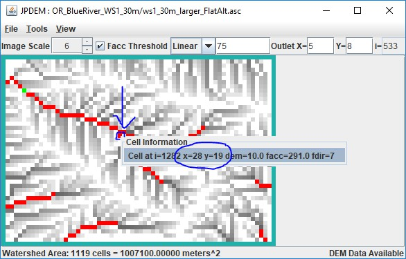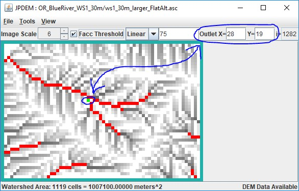Unfortunately, if you add a cell to the outlet set by mistake, there's no way to undo that particular cell's addition. You must click the "Tools" -> "Clear Outlets Set" menu item, and the start over, re-adding the overall watershed outlet, and then all the sub-reach outlet cell's in turn.
JPDEM doesn't currently provide any confirmation when you "Add Current Outlet …", however it does
echo a statement to the console window it was started from.
Here's an example, showing the addition of the overall watershed outlet (i=533) and three other cells as sub-reaches:
[ . . . ]
After clear, outlets set is {} After add, outlets set is {533}
After add, outlets set is {1282, 533} After add, outlets set is {1217, 1282, 533}
After add, outlets set is {1217, 1282, 1491, 533} [ . . . ]
Note that the console status statement identifies cells by their linear indices, not their x,y coordinates. A cell's linear index is its index counting left to right, across rows and down columns starting from the upper-left cell in the grid and ending with the lower-right cell. (For example, in a tiny 10x10 grid, the upper-left cell's index is 0, and the lower-right cell's index is 99.)
The highlighted cell indices above are exactly the values that JVelma needs to track runoff for the sub- reaches you've specified. You can copy them from the console window to the system clipboard (highlight them with the mouse, then press return), or simply write the numbers down on a piece of paper for reference when you configure your simulation in JVelma.
However, if you started JPDEM by double-clicking the .jar file, there is no console log and the above
output won't be available. Also, the above doesn't provide the X, Y coordinates, which are handy if you
want to set Cell Data Writers in JVelma for each sub-reach.
JPDEM does provide a way to view the Outlet Set, but it is a bit confusing.
Click the "Tools" -> "Generation Delineation Set" menu item:
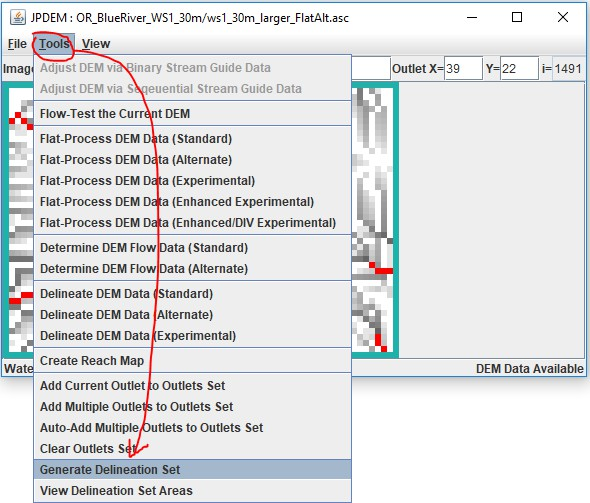This pops up a File Dialog - however, YOU'RE NOT ACTUALLY GOING TO GENERATE A DELINEATION SET.
Simply Click the "Cancel" button:
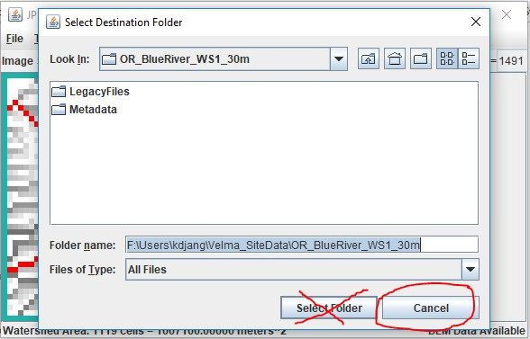Clicking the cancel button brings up a summary dialog window, containing the details of the set of outlets, without actually performing the "Group Delineation" that it claims is completed:
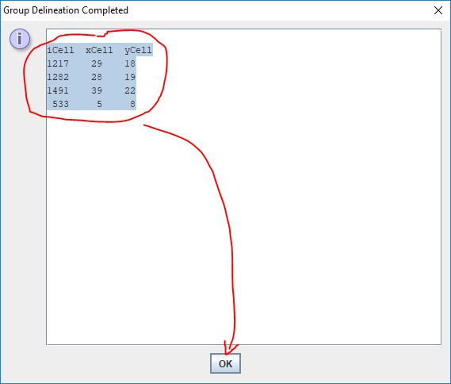You can highlight-select-copy the text in this window.
We recommend paste/saving it to a Notepad .txt file for later reference.
You can also view the sub-reaches by clicking the "Tools" -> "View Delineation Set Areas" menu item, but the Image Scale is fixed at "1", which may make small maps hard to read:
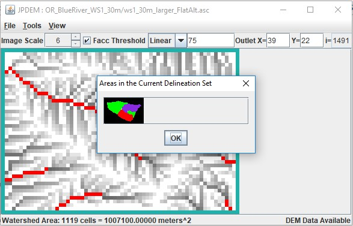Using the Sub-Reach Delineation Outlets with JVelma
Once you've found a set of sub-reach delineations that identify the cells for which you want to determine runoff, you'll need to configure a VELMA simulation configuration (using JVelma) to use those locations.
Start JVelma, and either create a new configuration using the DEM you found sub-reaches for, or load an existing .xml configuration file that uses that DEM.
In the "Run Parameters" Tab, under "Sub-Reach Mapping Controls", click the drop-down selector and choose "MULTI_MODE", then type the overall watershed outlet index value and the other sub-reach outlet index values into the numeric field to the right of the mode selector.
The following example shows an existing .xml configuration file being changed from solo mode to multi. (continued)
The original configuration:

Setting the mode:
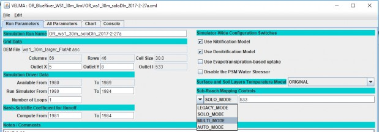Adding the sub-reach indices:
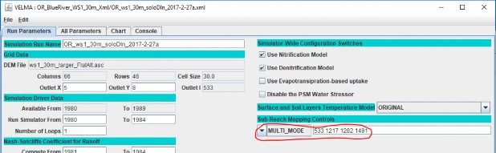When this simulation configuration is started, the VELMA simulation engine notes the MULTI_MODE setting and the list of outlets, and reports runoff for each of the specified sub-reaches. It also writes an
.asc file mapping the cells of the overall watershed to their specific reach-id values (which are listed in the ReachSummary.csv file).
After running the above simulation via JVelma, here is the ReachSummary.csv file's contents, opened
using Excel:
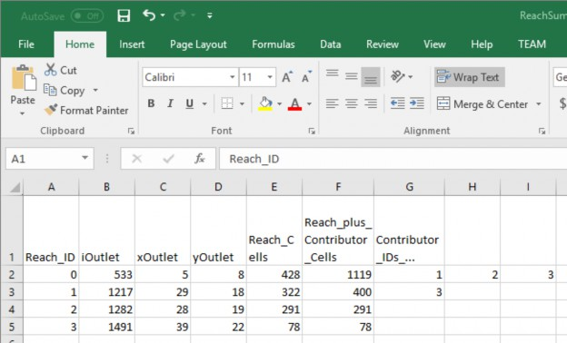The ReachSummary.csv contains 1 row for each sub-reach, and lists the linear index and X,Y coordinates of the each reach's outlet, plus the number of cells in the reach, and a list of the other reaches that flow into it.
The daily runoff values for each reach are listed in the ReachFlowResults.csv and ReachFlowContributions.csv files.
Here are the first 10 simulation days from the ReachFlowResults.csv file:
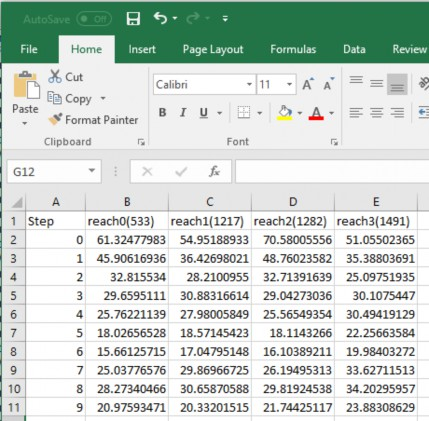AN IMPORTANT CONSIDERATION:
The contents of the ReachFlowResults.csv and ReachFlowContributions.csv files depend upon how you run the VELMA simulation.
When you use JVelma or VelmaSimulatorCmdLine to run your simulation, the contents of the ReachFlowResults.csv and ReachFlowContributions.csv files will show the same values.
These values are the runoff values at each specified sub-reach outlet INCLUDING runoff from upstream reaches. The runoff values are in mm/day/number-of-cells -- where the number-of-cells is the cell count for the sub-reach PLUS the cell counts of upstream reaches.
When you use VelmaParallelCmdLine to run your simulation, ReachFlowResults.csv continues to report the runoff values as described above, but ReachFlowContributions.csv contents change: they now represent the runoff for ONLY the sub-reach area, in mm/day/number-of-cells -- and now, the number- of-cells value is the cell count for ONLY the sub-reach.
Additionally, VelmaParalleCmLine reports each sub-reach's results in a separate subdirectory under the main output directory. There is one "./Results_* subdirectory for each specified sub-reach outlet (including the primary watershed outlet), and each ./Results_* subdirectory contains a ReachFlowResults.csv and ReachFlowContributions.csv file specific to that sub-reach.